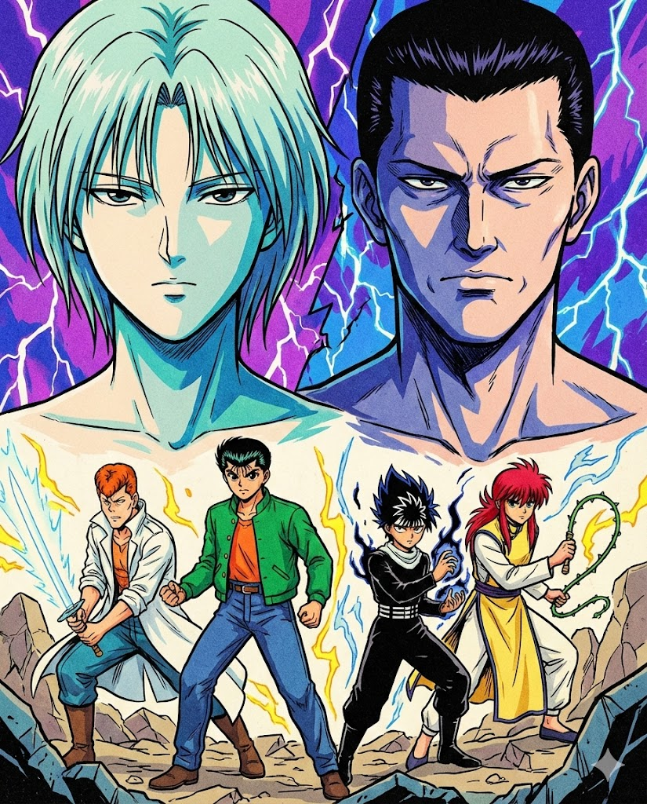

<<幽遊白書魔強統一戰-遊戲中唯一具跨軌影響力之特殊招式研究>>
樹（Itsuki）之跨軌道補血機制：遊戲中唯一具跨軌影響力之特殊招式研究
一、前言
SEGA Mega Drive《幽遊白書 魔強統一戰》（Yu Yu Hakusho: Makyou Toitsusen）為 Treasure 製作、1994 年推出的動作格鬥遊戲，以四人亂鬥、多軌道戰鬥系統著稱。多年來，研究多集中於 Treasure 的碰撞判定、AI 行為、角色平衡與軌道系統，但對於特定角色技能之「跨軌道」（跨前後 Z 軸）影響的探討極為稀少。

本研究主題集中於角色 樹（Itsuki） 的「影之手（Shadow‑Hand）」所衍生之特殊功能——跨軌道補血。此現象在玩家圈中極少被記錄或討論，亦未見於任何攻略、官方資料、技術文檔或論壇紀錄。本文將系統性整理該現象，並提出其作為遊戲中唯一具「跨軌影響力治療效果」之技能的論證。
《魔強統一戰》具備前景／後景兩條可切換之軌道，角色可透過特定按鍵組合於軌道間移動。大多數攻擊與效果僅限定於所在軌道進行判定，不同軌道之角色在未對準時通常不會互相影響。因此，任何能跨越軌道影響另一條軌上的角色之招式，均屬極為罕見且應受特別關注的機制。
二、樹（Itsuki）與「影之手（Shadow‑Hand）」技能說明
樹在遊戲中擅長召喚漂浮手臂(下下A或B或C)以攻擊、牽制或支援隊友。根據部分玩家訪談與非官方攻略記錄，其技能具有三種模式：
A 按鍵：攻擊模式
B 按鍵：治癒模式（本研究核心）
C 按鍵：取消或重新定位手臂
官方與玩家整理資料皆僅提及此技能可「攻擊敵人」或「治療自身」，並未提到能治療隊友，更未描述可跨軌道治療。
三、跨軌道補血現象的實證
（一）玩家實測
玩家於多人模式中進行反覆測試後發現：
樹召喚之治癒型影手
可對 位於他軌的隊友 進行生命值回復
該效果不受軌道差異影響，屬於「全域治療判定」之特例
（二）現象特性分析
治療不受軌道方向限制
屬持續型效果，可於不同軌道同步生效
其判定邏輯與一般攻擊、投射物完全不同，屬獨立分類
本現象之產生，推測與影手之「非空間性」判定有關（遊戲程式可能將其設為全域 buff/支援類效果，而非位置碰撞）。
四、文獻與資料庫比較
（一）官方與非官方資料
經查：
- Wikipedia
- Segaretro
- GameFAQs 出招表
- KKNews 與部落格攻略
均未記載本現象之存在。
（二）技術文獻缺口
本技能之「跨軌補血」為：
故屬原始遊戲研究的「未開發領域」，具補完性價值。
五、後續研究方向
反編譯 ROM，以確認影手治療是否採 global heal flag 判定
蒐集國際玩家資料，看是否存在他人觀察到同現象
錄製補血跨軌道的實際片段納入佐證
探討影手傷害模式是否亦具部分跨軌屬性
六、結論
樹（Itsuki）的「影之手（治癒模式）」是目前唯一可確認：
能跨越軌道直接影響非同軌角色的技能
此功能並未被官方或玩家公開資料記錄，推測屬：
- 特殊判定
- 設計遺留
- 或未被開發者高調公開的支援技術
本研究旨在補上 Mega Drive《幽遊白書》資料空缺，並為後續遊戲史研究提供基底。
|